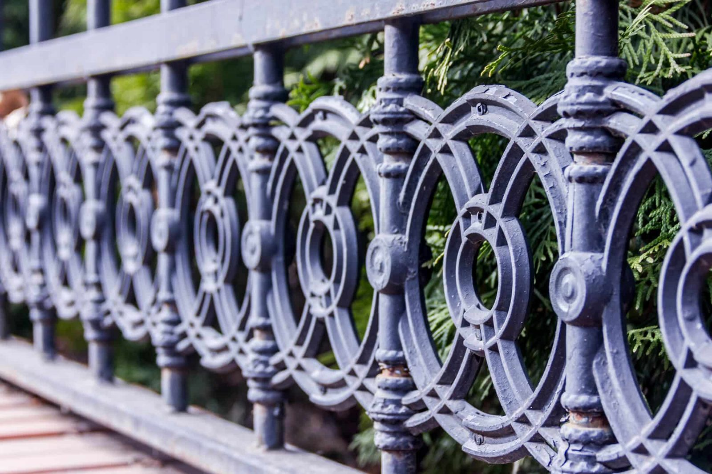
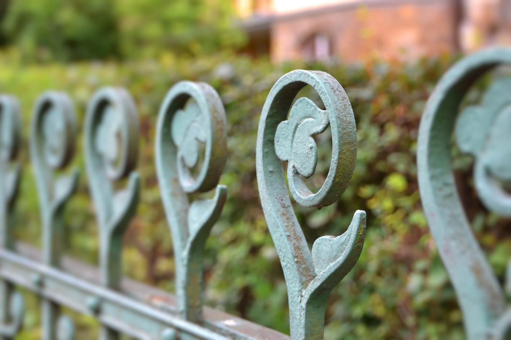
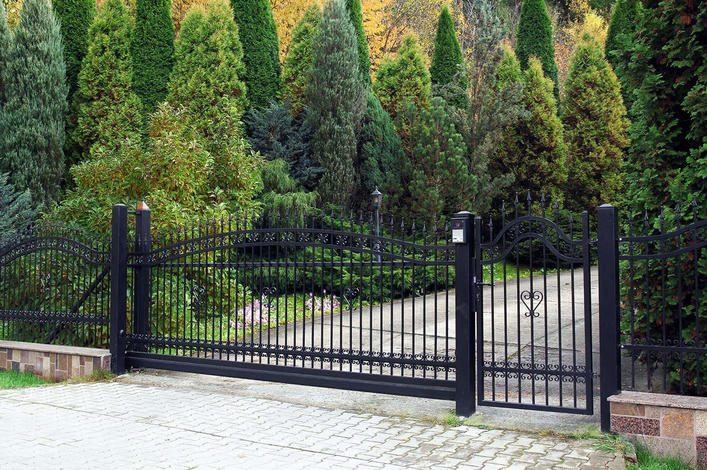

In This Guide
- Settle what the fence has to do first, then choose panel style, color, finish, post tops, and gates that suit the house.
- Stock panels are quicker to get, while custom-built panels give you exact heights, patterns, and finishes.
- The finish protects the metal. Paint, powder coating, and galvanizing each wear differently, and iron and steel rust when the coating fails.
- Ask how every decorative detail attaches, and plan for an automatic gate before the design is final.
A metal fence starts as a plain barrier. A handful of choices turn it into something that fits your house: panel shape, color, finish, post tops, and gates. Some of those choices are about looks, and others decide how much upkeep the fence will need in New Orleans humidity.
Big Easy Fence installs metal fences in several materials, and the design questions below apply to most of them. Work through them in order and you will reach the installer's first meeting with a clear picture of what you want.
Start With What the Fence Must Do
Before you pick a pattern, settle the practical points. How tall does the fence need to be, where will it run, and what is it for? Keeping pets in, marking off a pool area, framing the front yard, and securing a driveway all lead to different designs. A front-yard fence is seen every day and can carry more detail. A side-yard fence may only need to be sturdy and quiet in style.
Then decide how much ornament you want. Some owners want scrollwork, painted accents, and eye-catching tops. Others prefer straight lines and plain panels that stay out of the way. Walk the property line and imagine each version from the street, the patio, and the neighbor's yard. Neither approach is wrong. A house with traditional trim and detail usually suits ornament, and a house with clean modern lines usually suits a plain panel.
A common worry is that decoration weakens a fence. Ornament built into the panel when it is fabricated adds no weak point. Bolt-on pieces that can be pried off are a different matter, so ask how each detail is attached before you approve it.
Choosing Your Panel Style
There are two ways to get panels, and the choice shapes everything that follows.
Stock Panels
Stock panels come in standard heights and widths and are ready to install quickly. They suit a straightforward lot with a simple layout. The trade-off is choice: you pick from what is available, and an unusual width or a slope may call for adjustments.
Custom-Built Panels
A fabricator builds custom panels to your specifications, so heights, colors, finishes, and patterns are up to you. Shapes can run from classic squares and rectangles to diamond patterns and arched tops. Expect a longer lead time and more labor than stock panels, which is the price of a fence that matches your design exactly.

Colors and Finishes That Last
The finish does two jobs. It sets the color, and it protects the metal underneath. Steel and iron rust when the coating wears through. Aluminum does not rust, so its finish is mostly about color and keeping the surface in good shape; our guide to aluminum fences covers how that works.
Picking a Color
Matte black is the classic choice and blends into landscaping. White looks crisp but shows dirt and mildew sooner in a humid climate. Muted greens and bronze tones read as traditional, and brighter shades make a bolder statement. Dark colors also absorb heat, so a black fence can be hot to the touch on a summer afternoon. Check your HOA rules before ordering an unusual color.
Paint
Paint is the most affordable finish. It also wears faster. It chips and fades, and each recoat means cleaning the surface, sanding off any rust, and priming before the new coat goes on.

Powder Coating
Powder coating uses a dry pigment that is electrostatically sprayed onto the metal and then baked, which forms a hard shell. It is done in a shop before installation and offers a wide range of colors. It resists chips and fading better than paint, but it is not immune. A scratch that reaches bare metal should be touched up promptly.
Galvanizing
Galvanizing adds a zinc layer to steel to slow corrosion. It is often the base under paint or powder coating on fences that will face constant moisture. It does not apply to aluminum, which does not need it.
| Finish | How It Works | Watch For |
|---|---|---|
| Paint | Applied over prepared, primed metal | Chipping, fading, and regular recoating |
| Powder Coating | Dry pigment baked on in a shop | Scratches that expose bare metal |
| Galvanizing | Zinc layer on steel | Limited color unless painted or powder coated over it |
| Spray Paint and Stencils | Do-it-yourself color and patterns | Fading in the sun and frequent touch-ups |
Adhesive wraps can peel in strong heat and wind. If you want color or a pattern, choose powder coating, or paint that you are willing to maintain.
Decorative Details for Posts, Rails, and Panels
Small details change the character of a fence more than most owners expect. Keep form and function in balance, and choose pieces that suit both the house and the fence style, whether that is a simple aluminum design or a traditional wrought iron look.
Finials and Post Caps
Finials sit on top of posts and pickets. Spear points feel formal, and ball tops read as traditional. Square pyramid caps feel more modern. A cap also keeps rain out of a hollow post, which helps prevent rust from starting on the inside.
Scrollwork and Rosettes
Scrolls, curves, and flower-shaped rosettes add a handmade look. A few well-placed pieces usually look better than a fence crowded with them, and they are easier to keep painted.
Top and Bottom Rails
Rails can carry a pattern of their own, such as a repeating key design like the one on the fence pictured at the top of this page, or they can stay plain. Patterned rails give a fence a finished look even when the pickets are simple.
Gates and Railings That Match
A gate is the part of the fence people notice first, so it should match the rest of the design. A heavy, ornate gate looks out of place on a plain modern fence. A slim steel railing can look thin next to a rustic wood fence. Match the style, size, and color, and the whole entrance feels planned. Hinges, latches, and handles matter too. They should match the finish of the fence, and they see more wear than anything else on it.
Think about how the gate moves. A swing gate needs clear ground in front of it to open, and a sliding gate needs room along the fence line to travel. A sloped driveway or a tight turn can rule one style out, so check the space before you fall for a design.
If you might add an automatic gate or a sensor later, tell the installer before the design is final. The posts, clearance, and gate frame all need to be right for an operator. Our automatic gates page explains the options, and the wiring and setup belong with a professional.

Before You Finalize the Design
- Check the rules. Height, materials, and color can all be limited by your city or parish and your HOA. Ask before you order anything.
- Confirm the property line. A recent property survey settles where the fence can go.
- Plan for utilities. Call 811 before any digging, or make sure your installer does.
- Ask about repairs. Find out how a chipped finish or a bent picket gets fixed on your chosen design.
- Allow time for custom work. Built-to-order panels take longer than stock ones.
Once you have a direction, look through the project gallery for finishes and post tops you like and bring photos to the first meeting. A few reference photos tell an installer more than a page of description.
Ready to Design Your Fence?
Share your yard, your style, and how you plan to use the fence, and we will help you turn those ideas into a design that works.